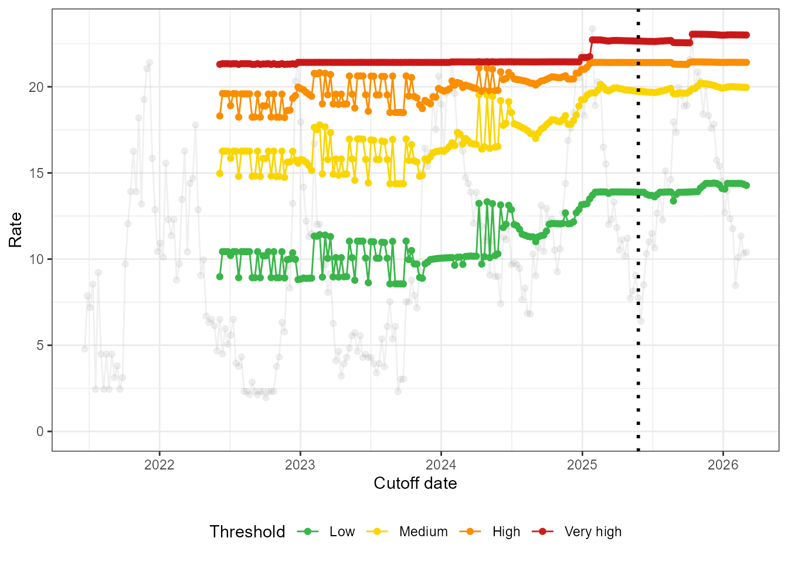
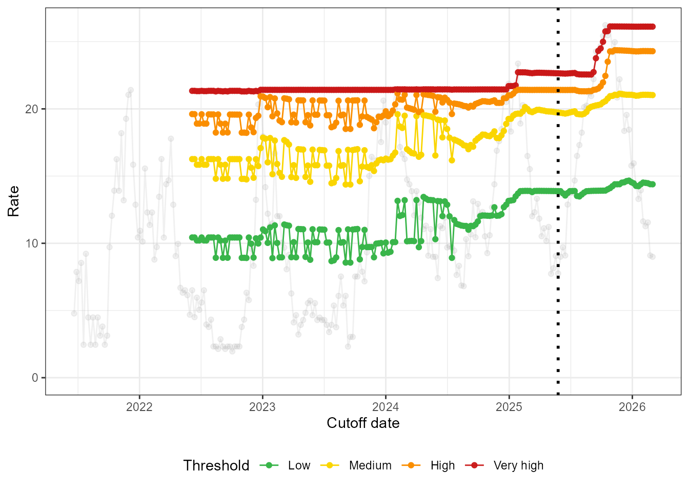
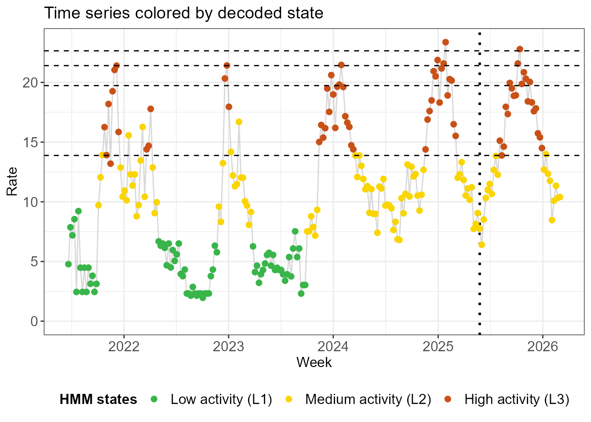
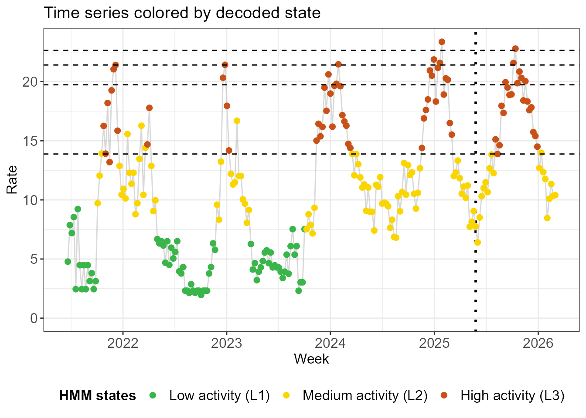
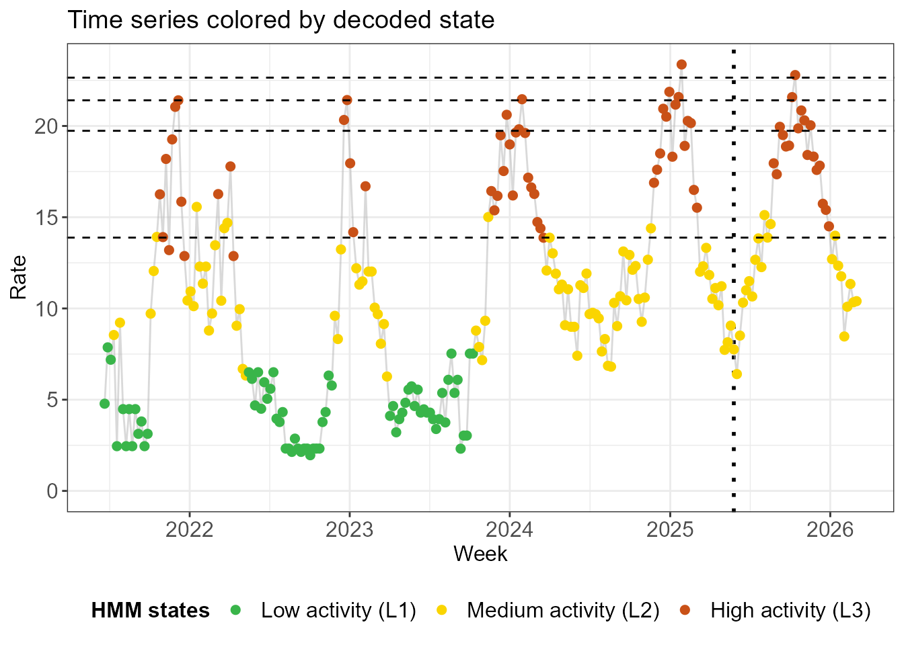

Dealing with new data
dealing-with-new-data.RmdThresholds for respiratory surveillance are often updated once per year. These frozen thresholds are then used to assess the evolution of the epidemiological situation in the coming year.
When using QUEST thresholds, which extra tools do hidden Markov models provide in terms of surveillance? We explore 2 ways of dealing with new data here: recomputing thresholds and out-of-sample state decoding.
Recomputing thresholds
We will still be working with the Belgian SARI data described in the
vignette Getting started
(vignette("getting-started")). We simulate 40 extra weeks
of data consisting of a single peak: 20 weeks where the incidence
increases linearly followed by 20 weeks where it drops at the same rate.
We add some random noise to make it look more like real world data.
simulate_rates <- function(rate_increase) {
bind_rows(
# Increasing rate over 20 weeks
tibble(
index = as.Date("2025-05-26") + 1:20 * 7,
rate = 8 + rate_increase * 1:20 + rnorm(20)
),
# Falling rate over 20 weeks
tibble(
index = as.Date("2025-05-26") + 21:40 * 7,
rate = 8 + rate_increase * 20 - rate_increase * 1:20 + rnorm(20)
)
)
} We first simulate a normal scenario in which the new peak is
similar in height to the 2 previous seasons. We create a data set
df_sim_normal with the new data, which we add to the old
data to create df_all_normal.
df_sim_normal <- simulate_rates(rate_increase = .7)
df_all_normal <- bind_rows(df_sari_be, df_sim_normal)One way to incorporate the new data is to recompute thresholds. We
can add the data week per week using run_loop_thresholds()
as demonstrated in Getting started
(vignette("getting-started")).
fit_loop_normal <- run_loop_thresholds(df_all_normal, n_states = 3)As expected, the thresholds remain stable.
loop_plots_normal <- create_loop_plots(fit_loop_normal)
loop_plots_normal$thresholds +
geom_vline(xintercept = as.Date("2025-05-26"), linetype = "dotted", linewidth = 1)
Next we simulate a high scenario in which the new peak is higher than the 2 previous seasons.
df_sim_high <- simulate_rates(rate_increase = 1)
df_all_high <- bind_rows(df_sari_be, df_sim_high)
fit_loop_high <- run_loop_thresholds(df_all_high, n_states = 3)Below we see that the thresholds increase to account for the intense new season. The high and very high thresholds are impacted the most, since they are the most sensitive to the highest observed values.
loop_plots_high <- create_loop_plots(fit_loop_high)
loop_plots_high$thresholds +
geom_vline(xintercept = as.Date("2025-05-26"), linetype = "dotted", linewidth = 1)
Out-of-sample state decoding
The following approach to incorporating new data is more in line with threshold computation, which is routinely done once per year. Freezing the hidden Markov model that we used to compute the thresholds, we can use it decode which weeks in the new season are in which state. We stress that the HMM is frozen because the new data is not used to retrain the model and potentially redefine the hidden states. The literature refers to this process as out-of-sample decoding, highlighting again that the new data are not part of the sample on which the model was trained.
We run the HMM and compute thresholds on the original data below.
fit_frozen <- run_hmm(df_sari_be, n_states = 3, type = "rate")
thresh <- run_threshold_computation(fit_frozen)We then decode the state assignments of both old and new data using
the states in hmm_frozen.
decode_states_normal <- run_out_of_sample_decoding(
obs_data_new = df_sim_normal,
hmm_frozen = fit_frozen
)There are several ways to decode the states, which we discuss here without going into the technical details.
- One global way to assign states is to answer the following question:
given the fitted HMM, out of all possible combinations of state
assignments for each week, which is the most likely given the observed
incidences? This is encoded as
method = "global"in the output ofrun_out_of_sample_decoding().
decode_plots_normal <- create_decoding_plots(decode_states_normal, method = "global")
decode_plots_normal$time_series +
geom_hline(yintercept = thresh$thresholds, linetype = "dashed")
- A second approach is to look at each week separately to determine
its state. The assignment is based on the observed incidence that week
(how likely it is to be emitted by the distribution in that
state?) and on the assigned states in the preceding and following
week (how likely are these state transition?). Rather than
outputting a single state for each week, we are given a distribution
over the different states each week. This is encoded as
method = "local"and provides what we called posterior probabilities in Getting started (vignette("getting-started")). If we want one single state assignment each week, we can take the most probable one.
decode_plots_normal <- create_decoding_plots(decode_states_normal, method = "local")
decode_plots_normal$time_series +
geom_hline(yintercept = thresh$thresholds, linetype = "dashed")
- A third approach, encoded as
method = "filtering"does exactly the same asmethod = "local", but it only takes into account the preceding week, not the following week. While it may seem strange not to take into account all the available information, these state assignments are stable in the sense that adding one more week of data does not change the second-to-last state assignment.
decode_plots_normal <- create_decoding_plots(decode_states_normal, method = "filtering")
decode_plots_normal$time_series +
geom_hline(yintercept = thresh$thresholds, linetype = "dashed")
The output of run_out_of_sample_decoding() contains two
data.frame objects, one with the most probable state
according to each of the 3 methods and one with the state probabilities
for the filtering and local methods.
head(decode_plots_normal$states, 12)
#> NULL
head(decode_plots_normal$probs, 12)
#> NULL